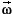
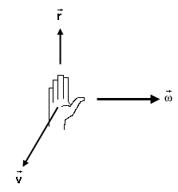

relative to some reference point O and
the particle's velocity vector
relative to some reference point O and
the particle's velocity vector  . There are two directions in which this
perpendicular can point. The following right-hand rule determines
which one it is.
. There are two directions in which this
perpendicular can point. The following right-hand rule determines
which one it is.
Angular velocity as a vector quantity. The definition of angular velocity on Page 1 defines angular velocity as a scalar. It is possible to define angular velocity as a vector . This definition involves a right-hand rule that is illustrated in Figure 3 below. The scalar angular velocity defined above is the scalar component of the vector in the direction of .

Figure 3
The angular velocity vector of a particle is perpendicular to
the plane spanned by the particle's position vector relative to some reference point O and
the particle's velocity vector . There are two directions in which this
perpendicular can point. The following right-hand rule determines
which one it is.
Point the outstretched fingers of the right hand from the
reference point O to the moving particle, i.e., in the direction of
the position vector , so that the
palm faces in the direction of the particle's velocity and so that the fingers can be curled
towards that velocity. Then the thumb will point in the direction
of the angular velocity .
In the case of the car's motion illustrated in Figure 1 on Page 1, the car's velocity is to the left, generally speaking, and its angular velocity vector is out of the screen towards the viewer.
The magnitude of the angular velocity vector is equal to the angular speed as defined on Page 2.